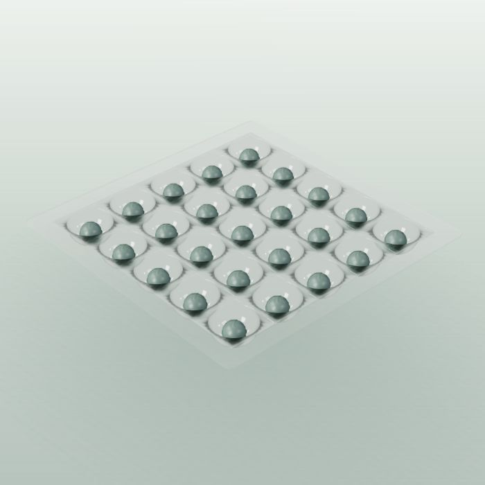

MicroSphere
A defined starting point for spheroids and organoids.
- Standardised 3D aggregation
- Imaging and standard 3D assays
- Inserts for 12-well plates or films
More about MicroSphere
Defined microcavities, typically 300–800 µm in diameter, support 3D aggregation and microscopy. Cavity geometry and protocol should be matched to your cell model.
Full technical information ↗